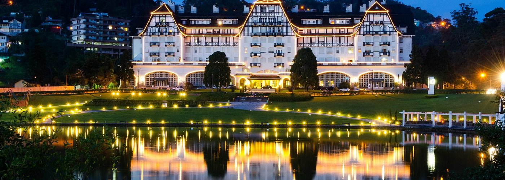
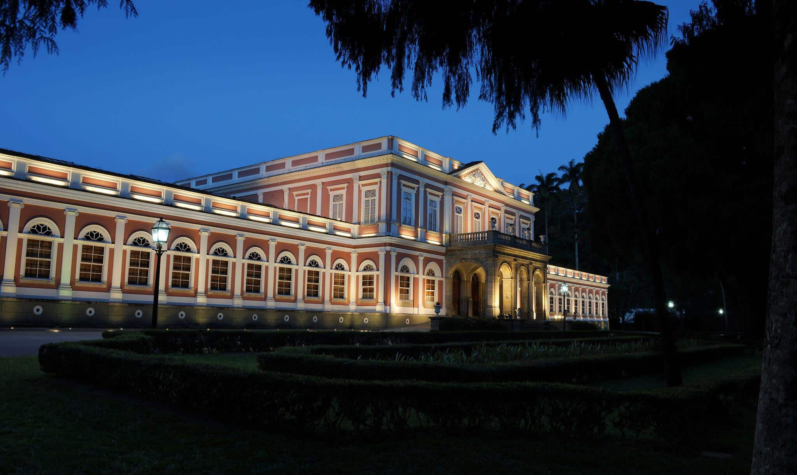
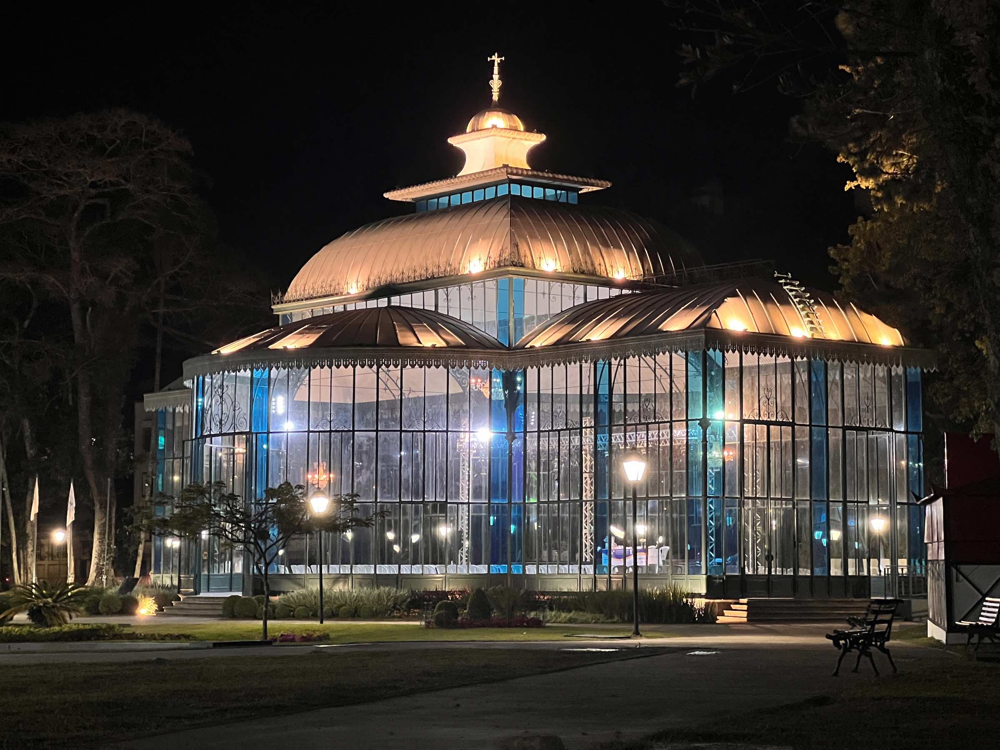
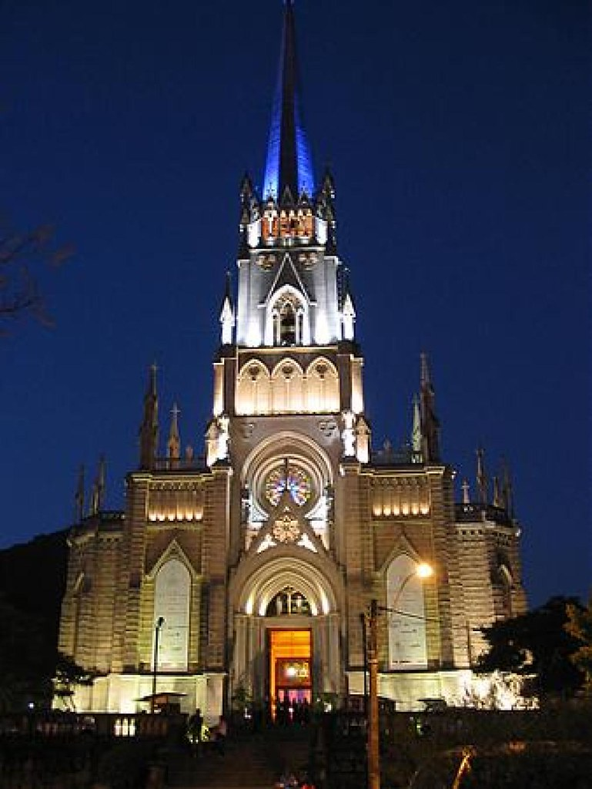

Área Leste
Descubra o coração histórico de Petrópolis

Museu Imperial
Antigo Palácio de Verão do Imperador Dom Pedro II, hoje um dos mais importantes museus do Brasil, preservando a história do Império.

Palácio de Cristal
Estrutura em ferro e vidro inaugurada em 1884, inspirada no Crystal Palace de Londres. Hoje abriga exposições e eventos culturais.

Catedral São Pedro de Alcântara
Majestosa catedral neogótica onde estão os restos mortais do Imperador Dom Pedro II e da Imperatriz Teresa Cristina.
Área Oeste
Natureza exuberante e aventuras inesquecíveis

Parque Nacional da Serra dos Órgãos
Uma das unidades de conservação mais importantes do Brasil, com trilhas, cachoeiras e vista panorâmica da região serrana.

Cascata do Véu da Noiva
Cachoeira de 45 metros de altura, uma das mais belas da região. Perfeita para contemplação e fotografias inesquecíveis.

Fazenda Samambaia
Fazenda histórica com arquitetura preservada, oferece experiências rurais autênticas e contato direto com a natureza.
Gastronomia
Sabores únicos da Cidade Imperial
Tradição Alemã e Brasileira
A gastronomia petropolitana é uma deliciosa fusão da tradição alemã com sabores brasileiros. A colonização alemã deixou marcas profundas na culinária local.
🍺 Cervejarias Artesanais
Petrópolis é berço da cerveja brasileira, com cervejarias tradicionais e artesanais
🥨 Gastronomia Alemã
Pratos típicos como eisbein, salsichão e strudel em restaurantes tradicionais
☕ Cafés Históricos
Cafés centenários com atmosfera imperial e doces artesanais

Eventos
Cultura e tradição durante todo o ano
Festival de Inverno
Música clássica e popular em diversos pontos históricos da cidade
Bauernfest
Festa da tradição alemã com música, dança e gastronomia típica
Festival de Inverno
Arte, cultura e música em um dos eventos mais tradicionais da região
Oktoberfest Petrópolis
Celebração da cultura alemã com cerveja artesanal e pratos típicos